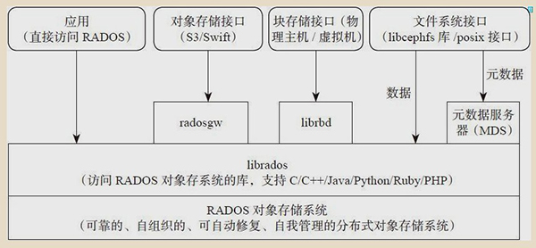
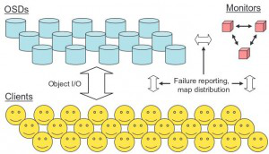

玩转 Ceph 的正确姿势
玩转 Ceph 的正确姿势
本文先介绍 Ceph， 然后会聊到一些正确使用 Ceph 的姿势；在集群规模小的时候，Ceph 怎么玩都没问题；但集群大了（到PB级别），这些准则可是保证集群健康运行的不二法门；
Ceph 最初的目标是做一个分布式文件系统，直到现在这个目标也不能算完美实现；目前官网上对它的文件系统还是谨慎推荐的态度（不建议对线上核心业务部署）；
业界使用 Ceph ，大多是用它的对象存储；
Ceph 客户端
Ceph 支持三种存储接口：对象存储 RGW(rados gateway)、块存储 RBD(rados block device) 和文件存储 CephFS;
这三个接口只是在客户端的封装库不同，到服务端了都是对象存储；

对象存储（RGW:RADOS gateway）
Ceph 对象存储服务提供了 REST 风格的 API ，它有与 Amazon S3 和 OpenStack Swift 兼容的接口。也就是通常意义的键值存储，其接口就是简单的GET、PUT、DEL和其他扩展;
块存储（RBD：RADOS block device）
RBD 是通过librbd库对应用提供块存储，主要面向云平台的虚拟机提供虚拟磁盘；RBD类似传统的SAN存储，提供数据块级别的访问；
目前 RBD 提供了两个接口，一种是直接在用户态实现， 通过 QEMU Driver 供 KVM 虚拟机使用。 另一种是在操作系统内核态实现了一个内核模块。通过该模块可以把块设备映射给物理主机，由物理主机直接访问。
文件存储
Ceph 文件系统服务提供了兼容 POSIX 的文件系统，可以直接挂载为用户空间文件系统。它跟传统的文件系统如Ext4是一个类型，区别在于分布式存储提供了并行化的能力；
原生接口
除了以上3种存储接口， 还可以直接使用 librados 的原生接口，直接和RADOS通信；
原生接口的优点是是它直接和和应用代码集成，操作文件很方便；但它的问题是它不会主动为上传的数据分片；一个1G的大对象上传，落到 Ceph 的存储磁盘上就是1G的文件；
而以上三个接口是具有分片功能（即:条带化 file-striping)
PS：两个对象的区分
需要说明下，这里提到两个对象的概念：一个是 RGW中的对象存储，一个是 Ceph 的后端存储的对象；这两个需要区分：
第一个对象面向用户，是用户接口能访问到的对象；
第二个对象是ceph 服务端操作的对象；
eg：使用RGW接口，存放一个1G的文件，在用户接口看到的就是存放了一个对象（1）；而通过RGW 分片成多个对象（2）后最终存储到磁盘上；
Ceph 服务端

服务端 RADOS 集群主要由两种节点组成：一种是为数众多的、负责完成数据存储和维护功能的OSD（Object Storage Device），另一种则是若干个负责完成系统状态检测和维护的monitor。
Monitor
Monitor 集群提供了整个存储系统的节点信息等全局的配置信息，通过 Paxos 算法保持数据的一致性。
Pool 、PG和OSD
Pool是存储对象的逻辑分区，它规定了数据冗余的类型和对应的副本分布策略；支持两种类型：副本（replicated）和 纠删码（ Erasure Code）；目前我们公司内部使用的Pool都是副本类型（3副本）；
PG（ placement group）是一个放置策略组，它是对象的集合，该集合里的所有对象都具有相同的放置策略；简单点说就是相同PG内的对象都会放到相同的硬盘上； PG是 ceph的核心概念， 服务端数据均衡和恢复的最小粒度就是PG；
OSD是负责物理存储的进程，一般配置成和磁盘一一对应，一块磁盘启动一个OSD进程；
下面这张图形象的描绘了它们之间的关系：
- 一个Pool里有很多PG，
- 一个PG里包含一堆对象；一个对象只能属于一个PG；
- PG有主从之分，一个PG分布在不同的OSD上（针对三副本类型）

讲究的PG
一个Pool里设置的PG数量是预先设置的，PG的数量不是随意设置，需要根据OSD的个数及副本策略来确定：
Total PGs = ((Total_number_of_OSD * 100) / max_replication_count) / pool_count线上尽量不要更改PG的数量，PG的数量的变更将导致整个集群动起来（各个OSD之间copy数据），大量数据均衡期间读写性能下降严重；
良好的工程实践建议（掉坑后的教训）：
预先规划Pool的规模，设置PG数量；一旦设置之后就不再变更；后续需要扩容就以 Pool 为维度为扩容，通过新增Pool来实现（Pool通过 crushmap实现故障域隔离）；
对象的寻址过程
查找对象在集群中的存储的位置，具体分为两步：
第一步，对象到PG的映射；将对象的id 通过hash映射，然后用PG总数对hash值取模得到pg id：
pg_ id = hash( object_ id ) % pg_num第二步，PG到osd列表映射; 通过crush算法计算PG 上的对象分布到哪些OSD硬盘上；
CRUSH(PG_ID) =⇒ OSDCRUSH算法是 ceph的精华所在；
crush的目标
先看看crush算法的希望达成的目标：
- 数据均匀的分布到集群中；
- 需要考虑各个OSD权重的不同（根据读写性能的差异，磁盘的容量的大小差异等设置不同的权重）
- 当有OSD损坏需要数据迁移时，数据的迁移量尽可能的少；
crush算法
简单说下crush算法的过程：
第一步输入PG id、可供选择的OSD id 列表，和一个常量，通过一个伪随机算法，得到一个随机数，伪随机算法保证了同一个key总是得到相同的随机数，从而保证每次计算的存储位置不会改变；
CRUSH_HASH( PG_ID, OSD_ID, r ) = draw第二步将上面得到的随机数和每个OSD的权重相乘，然后挑出乘积最大的那个OSD；
( draw &0xffff ) * osd_weight = osd_straw在样本容量足够大之后，这个随机数对挑中的结果不再有影响，起决定性影响的是OSD的权重，也就是说，OSD的权重越大，被挑中的概率越大。
到这里了我们再看看crush算法如何达成的目标：
通过随机算法让数据均衡分布，乘以权重让挑选的结果考虑了权重；而如果出现故障OSD，只需要恢复这个OSD上的数据，不在这个节点上的数据不需移动；
crush优缺点
聊到这里，crush算法的优缺点就明显了：
优点如下：
- 输入元数据（ cluster map、 placement rule） 较少， 可以应对大规模集群。
- 可以应对集群的扩容和缩容。
- 采用以概率为基础的统计上的均衡，在大规模集群中可以实现数据均衡。
缺点呢：
- 在小规模集群中， 会有一定的数据不均衡现象（权重的影响低，主要起作用的是伪随机算法）。
看清楚了寻址的过程，就明白为啥PG不能轻易变更了；PG是寻址第一步中的取模参数，变更PG会导致对象的PG id 都发生变化，从而导致整个集群的数据迁移；
这里只是做个引子，关于crush算法，这篇文章讲的通俗直白，有兴趣的移步：大话Ceph--CRUSH那点事儿
Ceph 是Sega本人的博士论文作品, 其博士论文被整理成三篇短论文，其中一篇就是 CRUSH，
CRUSH论文标题为《CRUSH: Controlled, Scalable, Decentralized Placement of Replicated Data》，介绍了CRUSH的设计与实现细节。
（PS：另外两篇是 RADOS和 CephFS, 分别讲 Ceph 的服务器实现和 Ceph 文件系统的细节实现）
故障域的划分
刚开始接触 Ceph，通常会忽略 crushmap，因为即使对它不做任何设置，也不影响我们的正常使用；
一旦集群大了，没有它集群就处于一个危险的运行状态中；
没有故障域的划分，整个集群就处于一个未隔离的资源池中；
一个对象存过去，可能落在 500个OSD硬盘的任意三个上；
如果一块硬盘坏了，可能带来的是全局影响（副本copy，这个硬盘上丢失的PG副本可能分布在全局各个硬盘上）；
使用crushmap 将整个集群的OSD 划分为一个个故障域，类似将一个集群按业务划分成为了多个小集群；每个Pool 只会用到特定的 OSD，这样，一旦某个OSD 损坏，影响的只是某个业务的某个Pool，将故障的范围控制在一个很小的范围内。
良好的工程实践建议：
使用crushmap 划分故障域，将pool限制在特定的osd list上，osd的损坏只会引起这个pool内的数据均衡，不会造成全局影响；
服务端对象的存储
对象是数据存储的基本单元， 一般默认 4MB 大小（这里指的是RADOS的底层存储的对象，非RGW接口的对象）。
对象的组成分为3部分：key 、value、元数据；
- 元数据可直接存在文件的扩展属性中（必须是标准的文件属性），也可存到levelDb中；
- value 就是对象数据，在本地文件系统中用一个文件存储；
对于大文件的存储，Ceph 提供的客户端接口会对大文件分片（条带化）后存储到服务端；这个条带化操作是在客户端接口程序完成的，在 Ceph 存储集群内存储的那些对象是没条带化的。客户端通过 librados 直接写入 Ceph 存储的数据不会分片。
良好的工程实践建议：
对于对象存储，只使用 Ceph 提供的 RGW 接口， 不使用 librados原生接口；不仅有分片功能，扩展也更容易（RGW是无状态的，可水平扩展）；大量大对象直接存放到 Ceph中会影响 Ceph 稳定性（存储容量达到60%后）；
总结
上线 Ceph 前，先规划未来一年的预期使用量，为每个 pool 一次性设置 PG之后不再变更； 使用crushmap 设置故障域隔离，将磁盘故障后带来的数据平衡控制在一个小的范围之内。接口方面推荐只使用Ceph 提供的RGW 接口，不使用 librados原生接口。做好这些， 你的 Ceph 用起来会省心很多。